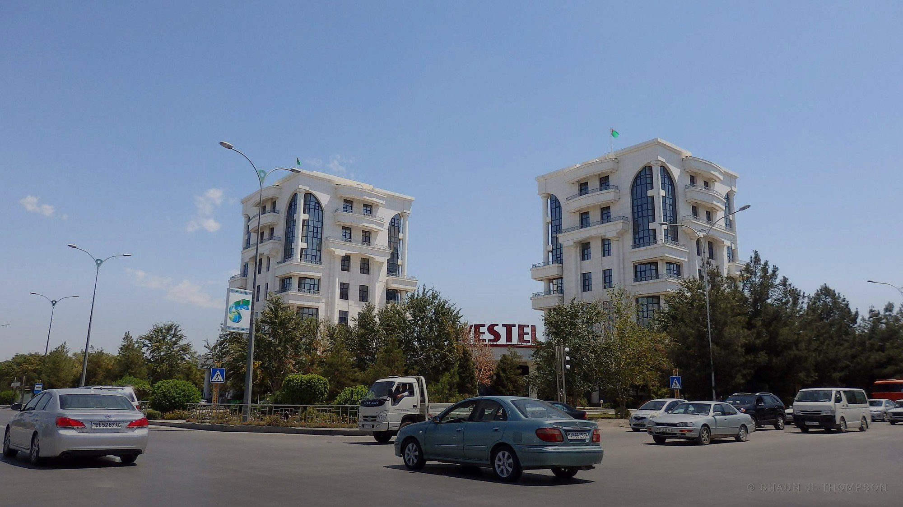
Travelled July 2015Published November 2026
Turkmenistan
Türkmenistan
from Dashoguz to Ashgabat
Photos from Turkmenistan at the end of July 2015. A transit visa let me travel on my own, but only through two cities: Dashoguz, near the Uzbek border, and Ashgabat.
- Stops
- 2
- Route
- Dashoguz · Ashgabat
- Photographs
- Shaun Ji-Thompson
The route
Dot map of Turkmenistan and its neighbours, with Turkmenistan's land borders. Ashgabat is marked as the capital. A faint line comes in from Uzbekistan to Dashoguz; the route runs south across the Karakum Desert to Ashgabat, and a faint line continues over the Kopet Dag to Mashhad in Iran.
Dashoguz
Map ↑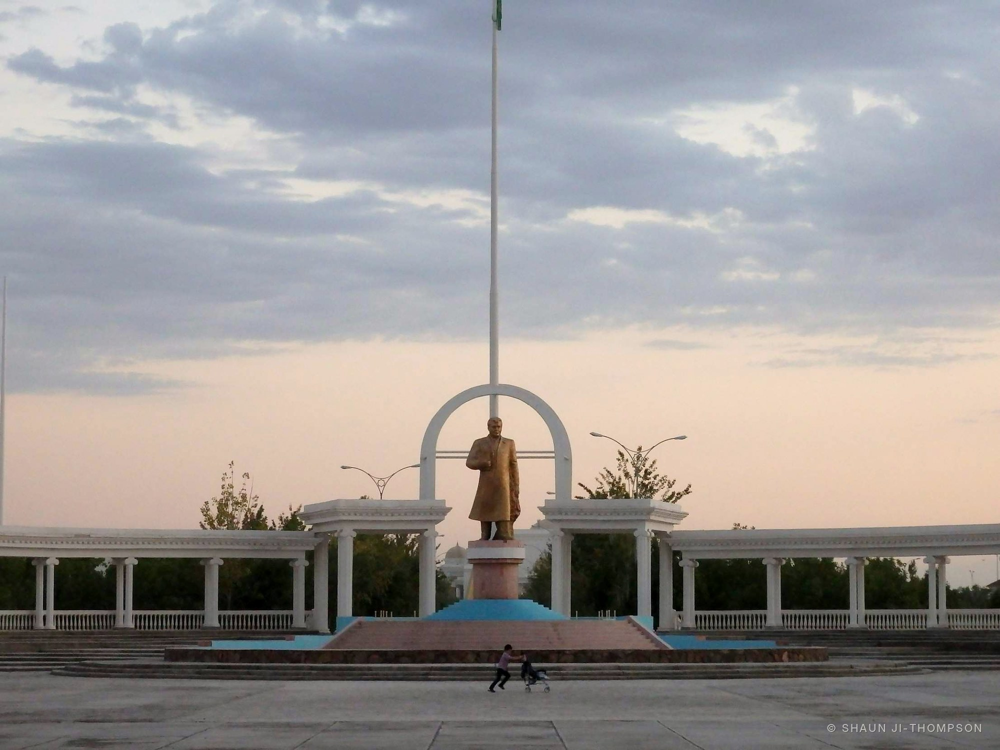
Dashoguz, the first town over the border from Uzbekistan. From here the road runs south across the Karakum Desert to Ashgabat.
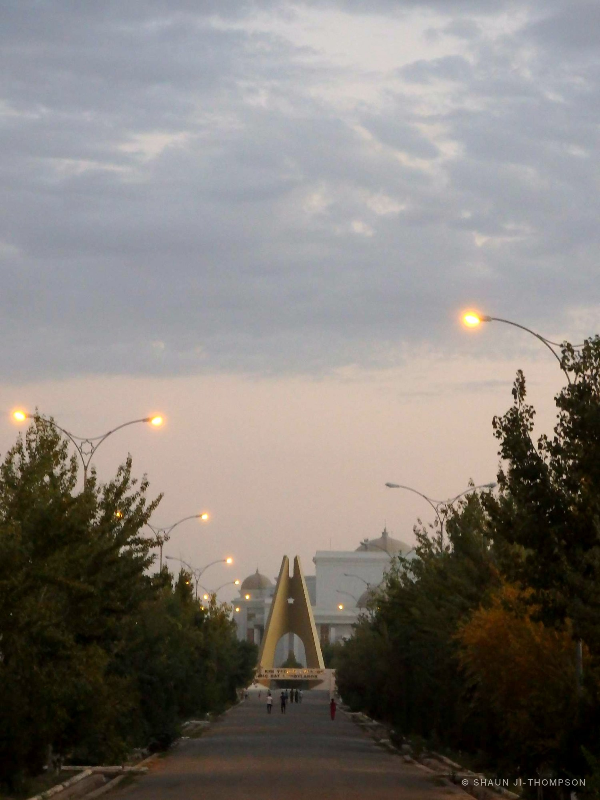
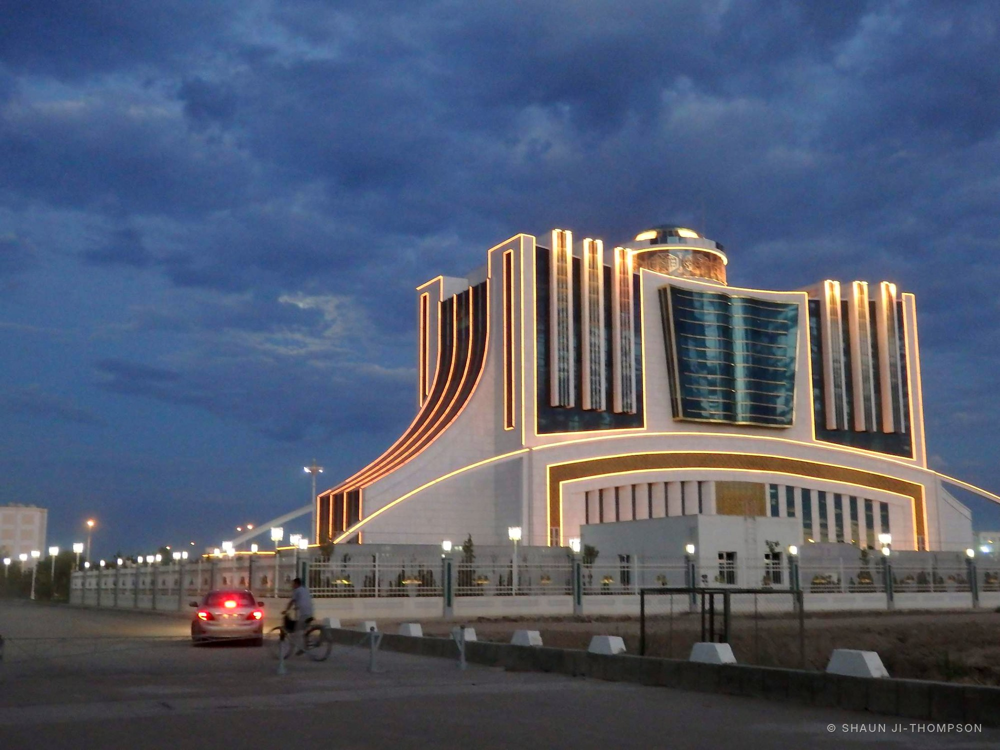
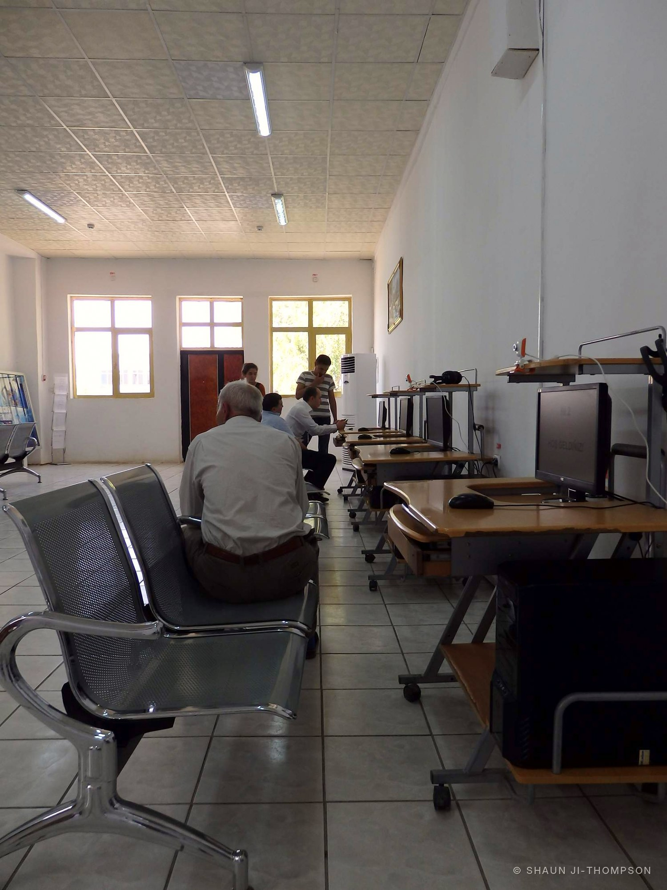
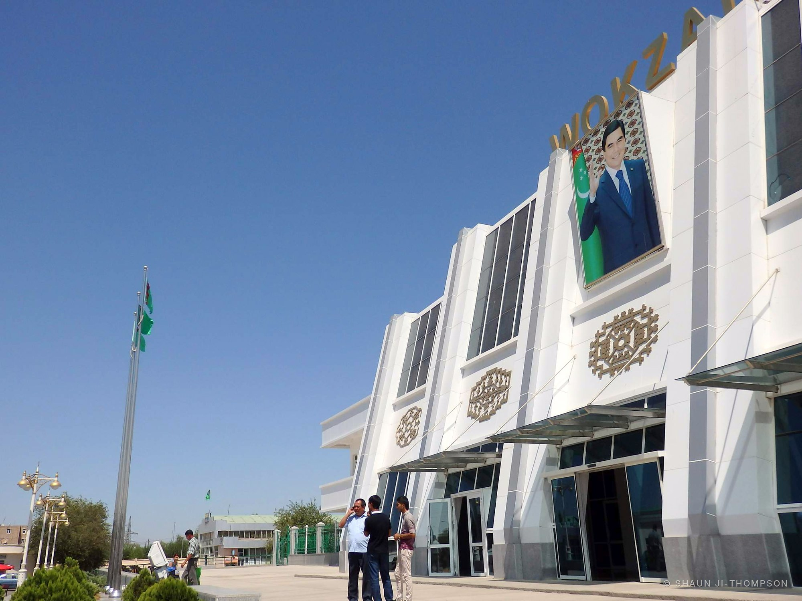
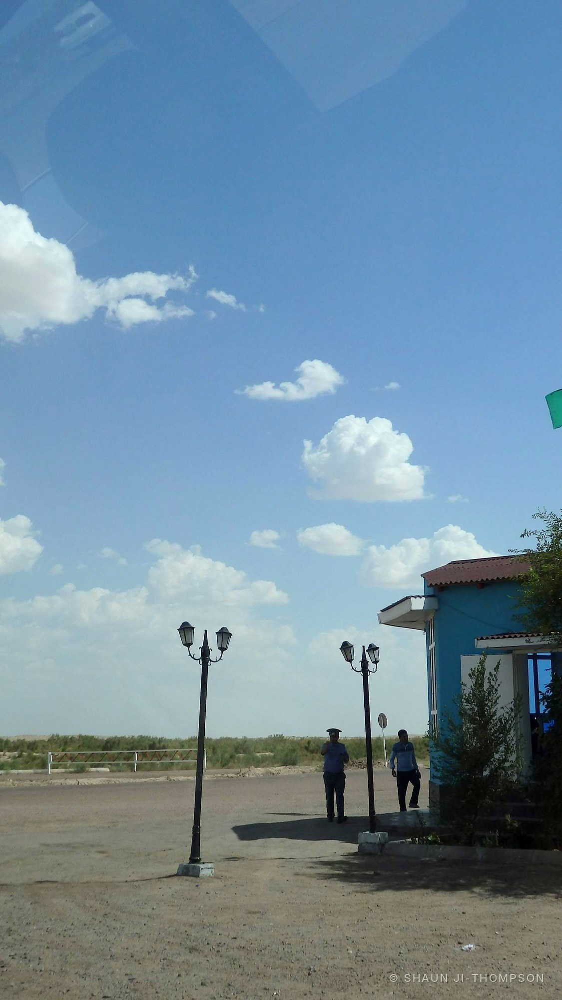
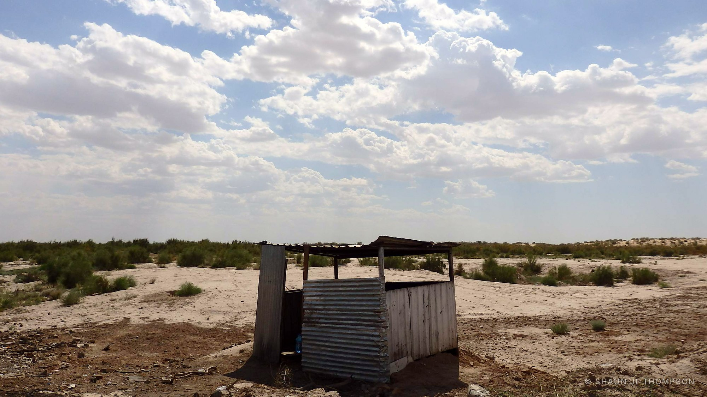
Ashgabat
Map ↑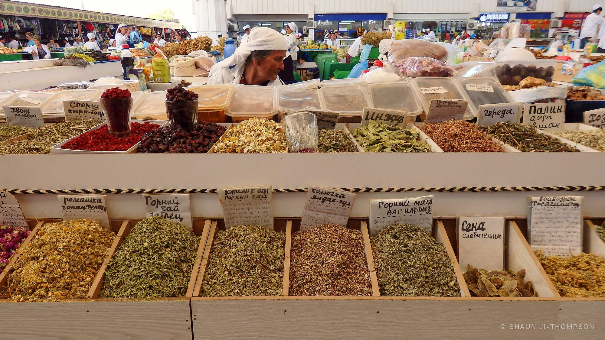
Ashgabat, the capital, under the Kopet Dag. The herbs in the bazaar are labelled in Russian and Turkmen. Then south over the mountains to Mashhad.
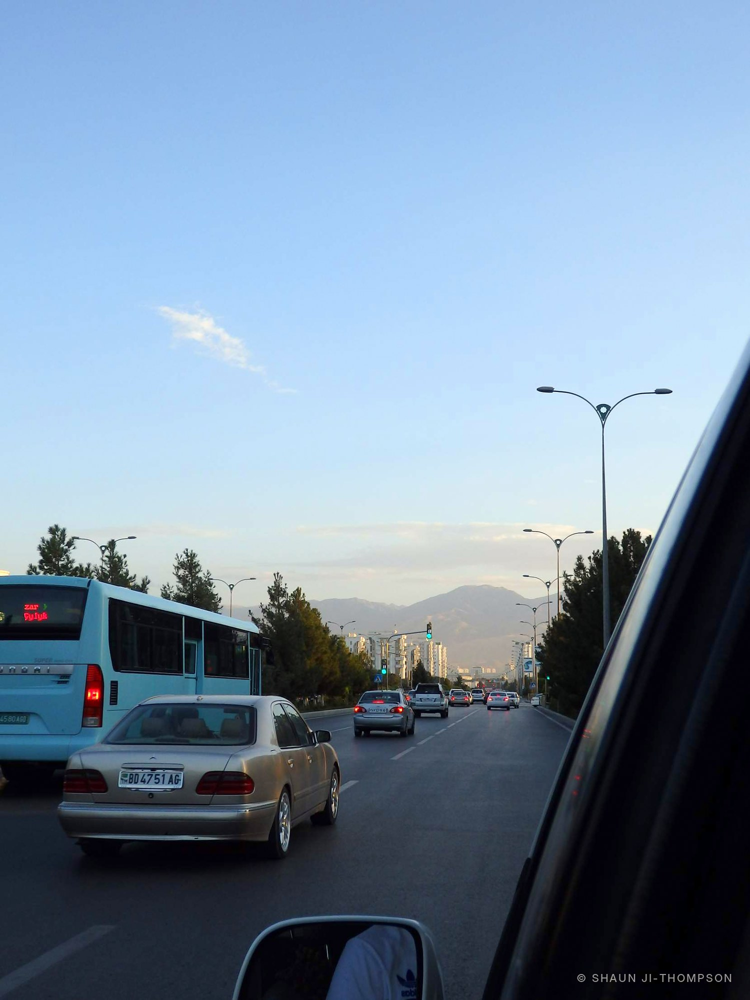
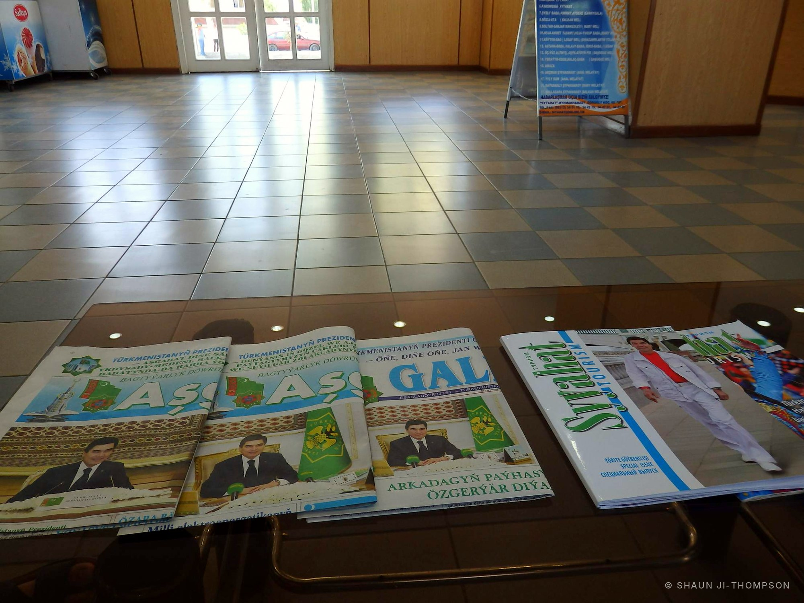
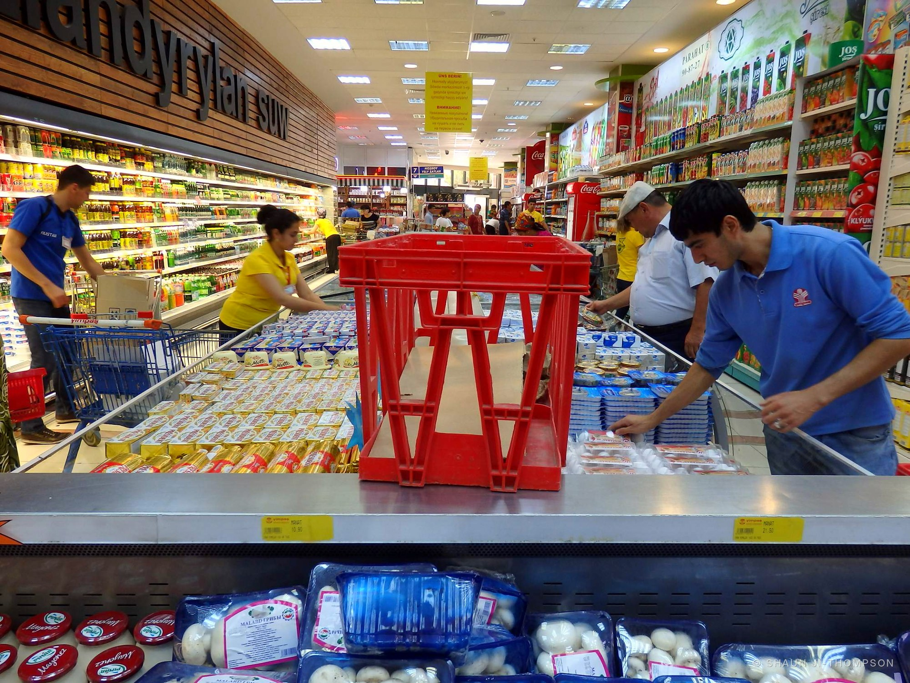
What did you think?
A reaction, a correction, a place I should go next. I read every note.